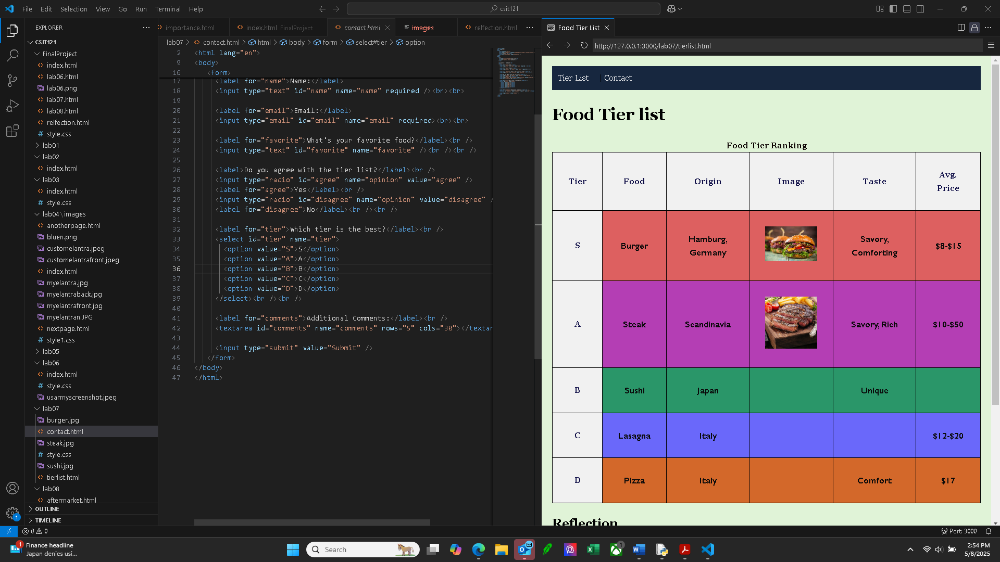

Lab 07: Tier List
This lab used semantic HTML and CSS Flexbox to organize and present a styled tier list of items. This tier list is created in groups in order of S,A,B,C,D. All food tier ratings are personal opinion. Tier list and contact html are two seperate pages suported with a navigation bar. Both pages are linked to one styling sheet to insure reflective styling on both pages. Two image are included based on the file name steak.jpg and burger.jpg. Both images are sourced via random Google Image search. Contact page is included where the user can send us there review and personal opinion on the tier list. One thing that I was struggling with on Lab07 is making the outter back ground colors to match there row. For example S tier will be red, A tier will be purple, and so on. For me this assignment was enjoyable, giving us the option to chose what foods we want to pick and make a tier list out of them. Adding some of my favorite foods together and learning more about there origins was interesting to me. As well with implementing images giving the site more color and display for the audience/user.
